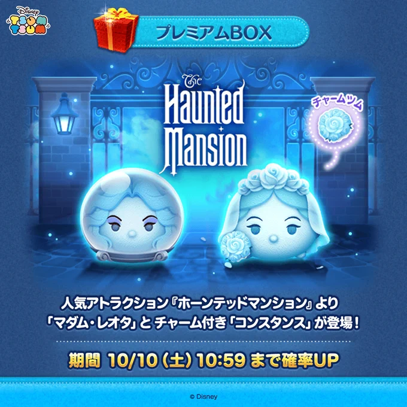

マダム・レオタとコンスタンス〈チャーム〉は引くべき？
10月7日にホーンテッドマンションの新ツム2体が登場しました。10月3日のまとめとは分けて、第2弾の情報と、自分が使ってみた感想を掲載します。

ふめいだよの結論：性能重視ならスルーでもよい
自分が使った感じでは、マダム・レオタもコンスタンス〈チャーム〉も、性能がすごく強いという印象ではありませんでした。引くかどうかで言えば、性能目当てなら今回はスルーでもいいと思います。
新ツムだから必ず引かなければいけない、ということはありません。コイン稼ぎなどの強さを優先する方は、無理に追わずにコインを残す判断でよいと思います。
これは運営者・ふめいだよの使用感に基づく個人的な評価です。公式の評価や実測ランキングではありません。スキルレベルや使い方によって感じ方は変わるため、誰にとっても弱いと断定するものではありません。
登場日と確率アップ期間
| 日付・期間 | 内容 | 10月7日時点 |
|---|---|---|
| 10月7日11:00 | マダム・レオタ、コンスタンス〈チャーム〉登場 | 登場済み |
| 10月7日11:00〜10月10日10:59 | 第2弾2体の確率アップ | 開催中 |
| 10月31日23:59まで | 第2弾2体の登場期間 | 期間限定 |
2体ともプレミアムBOXの期間限定ツムです。確率アップが終わる10月10日と、登場期間が終わる10月31日は別です。時刻は日本時間。期間・入手方法は第2弾新ツム情報で照合し、最終確認はゲーム内のBOX表示で行ってください。
マダム・レオタ
特別なボムを作り、サブツム1種類を消すタイプのスキルです。スキル効果中の操作とボムの使い方を、公式紹介動画で確認できます。
使ってみた個人的な評価
自分が使った範囲では、突出して強いと感じる性能ではありませんでした。強いツムを増やすことが目的なら、優先して引く必要はないと思います。キャラクターが好き、使い方を楽しみたい、という目的なら別ですが、性能だけで無理に確保をすすめるツムではありません。
ふめいだよのプレイ動画

ふめいだよ【ツムツム】 / YouTube
自分のチャンネルに掲載したプレイ動画です。スキルの動きや操作感を、記事の使用感と合わせて確認できます。
コンスタンス〈チャーム〉
1〜3種類のツムを消すスキルを持つ、チャーム付きの新ツムです。通常のコンスタンスとは別のツムなので、名前だけで取り違えないようにしてください。
使ってみた個人的な評価
こちらも自分の使用感では、すごく強いとは感じませんでした。チャーム付きという理由だけで引くことを優先せず、性能目的ならスルーでもよいというのが自分の意見です。
すでにコイン稼ぎに使えているツムがいる方は、慌てて追う必要はないと思います。手持ちのツムの育成や、この先のBOXに使うコインを優先する判断もありです。
ふめいだよのプレイ動画

ふめいだよ【ツムツム】 / YouTube
自分のチャンネルに掲載したプレイ動画です。チャーム付きの盤面やスキルの消去の様子を確認できます。
引くか迷ったときの考え方
- 性能・コイン稼ぎを優先：自分のおすすめは、今回は無理に引かずスルー。
- キャラクターが好き・コレクション目的：使えるコインの上限を決めて、1体確保を検討。
- イベント用に検討：ゲーム内のキャラクターボーナスと手持ちを確認してから判断。
確率アップ中でも狙ったツムが必ず出るわけではありません。「引かないと損」と考えて無理に回す必要はありません。コインが限られる場合は、どのツムを育てたいかを先に決めておくと選びやすいです。
前回記事以降の補足
ログイン不具合の修正完了
公式お知らせに、10月6日付で「【修正完了】ログインに関する不具合について」が掲載されています。ログインで困っていた方は、ゲーム内または公式お知らせで案内を確認してください。未確認のお詫び内容や配布期限は、この記事では断定しません。
ハロウィーンセレクトBOXは終了
前回記事で予告を紹介した全26種のセレクトBOXは、10月7日10:59に終了しています。この記事の公開時点では開催中ではありません。終了日時は10月情報まとめで照合しています。
月初の新ツム・イベント・キャンペーンの詳細は、10月3日公開のまとめ記事に残しています。そちらは10月3日時点の記録なので、当時の「開催中」「予告」と現在の状況を区別してください。
確認先と掲載方針
- ツムツム公式YouTube：マダム・レオタとコンスタンス〈チャーム〉
- 公式お知らせ：ログイン不具合の修正案内
- 攻略情報の照合：第2弾の期間・入手方法・スキル
- ツムツム公式X：第2弾新ツムの告知・掲載画像の出典
登場情報は公式動画、日時・スキルの補足は攻略情報で照合しています。強さや引くべきかの判断は、ふめいだよ個人の意見です。実測コイン枚数や未確認の追加ガチャ情報は掲載していません。
新ツム告知画像の出典はツムツム公式Xです。プレイ動画のサムネイルは、ふめいだよ【ツムツム】のYouTube動画から表示しています。画像・キャラクターの権利は各権利者に帰属します。当サイトは非公式の攻略・記録サイトです。